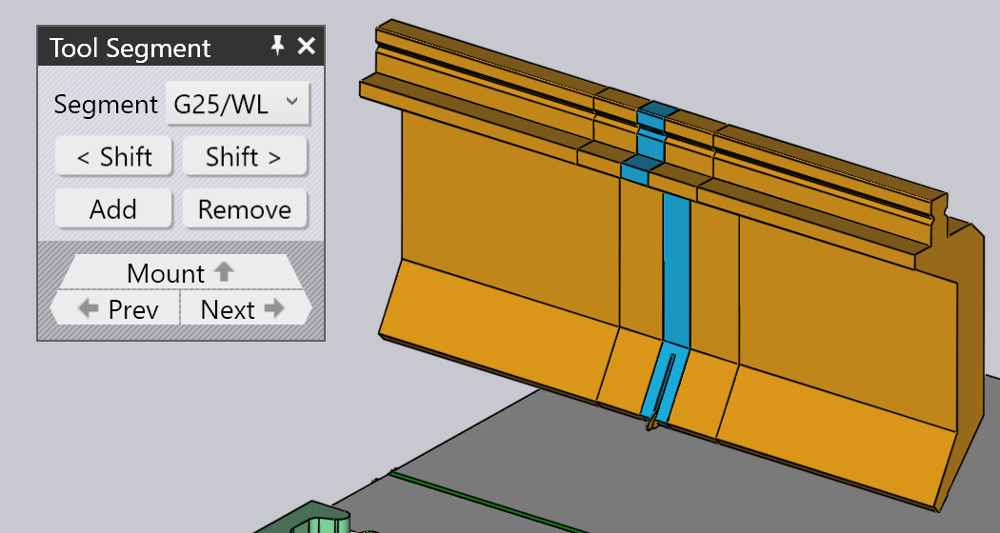

การแก้ไขตัวยึดเครื่องมือ
เมื่อคุณคลิกที่ตัวยึดเครื่องมือ แผง Bend Mount จะปรากฏขึ้นและสามารถใช้ เพื่อแก้ไขการตั้งค่าต่างๆ ของ Bend Mount รวมถึงการทำงานหลายอย่าง
แผง Bend Mount

แผง Bend Mount มีลักษณะตามภาพตัวอย่างด้านข้าง การตั้งค่าและการทำงานที่มีอยู่จะ แตกต่างกัน โดยขึ้นอยู่กับว่าคุณคลิกที่หัวเจาะ ดาย หรือ ตัวยึดอะแดปเตอร์ นอกจากนี้ การตั้งค่าบางอย่างอาจมีหรือไม่จะขึ้นอยู่กับ ความสามารถของเครื่องจักร
-
คลิกปุ่ม เปลี่ยนชนิดเครื่องมือ เพื่อแทนที่เครื่องมือที่ใช้ ใน Mount ที่เลือกด้วยเครื่องมืออื่น (ดูรายละเอียดเพิ่มเติมด้านล่าง เกี่ยวกับ_ตัวเลือกเครื่องมือ_ที่ใช้เลือกเครื่องมือทดแทน)
-
ช่องป้อนค่า ความยาว ถูกใช้เพื่อปรับความยาวของสถานี เมื่อ คุณป้อนค่าใหม่ที่นี่ TecZone Bend จะสร้างสถานีขึ้นมาใหม่ โดยใช้ ชุด Segment ที่เหมาะสมเพื่อพยายามให้ความยาวที่ร้องขอ ใกล้เคียงที่สุด คุณสามารถตรวจสอบ Segment ที่ถูกใช้งานได้ด้วยสายตา โดยการดูที่เส้นขอบ Segment ที่แสดงบน Bend Mount
-
ช่องป้อนค่า ตำแหน่ง ใช้เพื่อตั้งค่าตำแหน่ง_ขอบซ้าย_ ของ Mount ตามโต๊ะหรือคานของเครื่อง ตำแหน่งนี้ยังสามารถปรับได้ โดย_การลาก_ Mount ไปทางซ้ายหรือขวา (ดูรายละเอียดเพิ่มเติมด้านล่างเกี่ยวกับการลาก Mount)
-
ตัวเลือก แตร (แสดงเฉพาะสำหรับ Mount ของหัวเจาะ) สามารถใช้บังคับ TecZone Bend ให้ใช้งานด้านซ้ายและ/หรือขวา ear[1] ชิ้นส่วนในองค์ประกอบ)
-
หมุนเครื่องมือ ใช้เพื่อพลิกเครื่องมือ (ด้านหน้า/ด้านหลัง) ซึ่ง จะปรากฏเมื่อคุณแก้ไข Mount ที่ใช้เครื่องมือ_แบบอสมมาตร_ (เช่น Gooseneck Tool) การพลิกมีความฉลาดพอที่จะตรวจสอบได้ว่า ตัวยึดและเครื่องมืออื่นๆ ต้องถูกพลิกเพิ่มเติมเพื่อคงความสอดคล้องหรือไม่ ตัวอย่างเช่น ในภาพด้านล่าง การพลิกหัวเจาะ OW_Z4 (ใช้สำหรับ Z-bending) จะพลิกดาย ตัวยึด และแม้กระทั่งชิ้นงานด้วย เพื่อรักษาความสอดคล้องของกระบวนการ:

-
เพิ่มอะแดปเตอร์เข้า ใช้เพื่อเพิ่ม Extender เพื่อเพิ่มความสูง ของหัวเจาะหรือดาย เมื่อคุณเพิ่มอะแดปเตอร์ อะแดปเตอร์จะถูกเลือก และแผงสำหรับอะแดปเตอร์จะปรากฏขึ้น (ซึ่งช่วยให้คุณสามารถเปลี่ยนอะแดปเตอร์ที่ใช้อยู่ หรือถอดออกได้)

-
เพิ่มคอลัมน์ ใช้เพื่อเพิ่มช่องว่างเข้าไปใน Tool Mount เพื่อให้แผ่นปีก ผ่านได้โดยไม่ชน (ดูรายละเอียดเพิ่มเติมในส่วน Adding a Gap)
-
ความสูงเครื่องมือขนาดใหญ่ ใช้เพื่อแทนที่เครื่องมือที่เลือกด้วย เครื่องมือที่สูงกว่าในประเภทเดียวกัน
-
คลิก ลบ เพื่อลบ Tool Mount มีการแสดงข้อผิดพลาด Missing Punch หรือ Missing Die ใน Bend Navigator สำหรับการดัดที่ใช้สถานีนี้ ซึ่งสามารถแก้ไขได้โดยใช้ปุ่ม Add บน Command Bar ด้านซ้าย เพื่อเพิ่ม Mount ใหม่
-
ตัวเลือก เครื่องมือเซ็นเซอร์ ใช้สำหรับสลับคู่ดิสก์เซ็นเซอร์ ACB ที่แตกต่างกันซึ่งสามารถใช้กับชิ้นงานนี้ได้ การเลือกขึ้นอยู่กับ ความหนาของแผ่นโลหะและหัวเจาะที่ใช้งาน
-
หากเลือก Checkbox เช็คปริมาณ ระบบจะตรวจสอบ Segment ที่ใช้งานกับ_คลังชิ้นส่วน_ที่มีอยู่ (สามารถแก้ไขได้ โดยการคลิกลิงก์ การบำรุงรักษาเครื่องมือ…) หากมีการใช้ Segment ที่ไม่มีอยู่ ในคลัง สัญลักษณ์ Trefoil พิเศษจะถูกวาดขึ้นบนชิ้นส่วนดังกล่าว ดังที่เห็นในภาพด้านล่าง สำหรับชิ้นส่วน 40 มม. และ 45 มม. ใกล้กับกึ่งกลางหัวเจาะ:

เมื่อคุณแก้ไข Tool Mount โดยใช้การตั้งค่าและการทำงานดังกล่าว TecZone Bend จะตรวจสอบสถานะของการดัดทั้งหมดทันที โดยทำการตรวจสอบต่างๆ เช่น การชน การใช้งานเครื่องมือ และอื่นๆ สถานะของ Bend Navigator จะอัปเดตทันที และแบบเรียลไทม์ ซึ่งทำให้ง่ายต่อการทดลองกับการตั้งค่าต่างๆ พร้อมรับผลตอบกลับที่แม่นยำทันที
หน้าต่าง Replace Tool
เมื่อคุณคลิกที่ปุ่ม เปลี่ยนชนิดเครื่องมือ หน้าต่าง Replace Tool จะปรากฏขึ้น:

หน้าต่างนี้จะแสดงเครื่องมือทดแทนที่เป็นไปได้ทั้งหมด
-
ใช้ลำดับชั้นทางด้านซ้ายเพื่อลดจำนวนตัวเลือก เช่น คุณสามารถเลือกแสดงเฉพาะ Gooseneck Tools เพื่อให้ง่ายต่อการเลือก
-
ใช้ตัวเลือก Sort ที่ด้านบนเพื่อจัดเรียงเครื่องมือตามชื่อ ความสูง รัศมี หรือเกณฑ์การจัดเรียงอื่นๆ (ขึ้นอยู่กับว่า คุณกำลังแทนที่หัวเจาะ ดาย หรืออะแดปเตอร์)
-
คุณสามารถพิมพ์ชื่อเครื่องมือ (หรือชื่อย่อ) ลงในช่อง Search เพื่อกรองรายการอย่างรวดเร็ว การพิมพ์ชื่อเครื่องมือเพียงบางส่วนก็ใช้ได้ เช่น OW200 จะตรงกับทั้ง OW200, OW200/S และ OW200/K
-
ใช้แถบเลื่อน Scale เพื่อปรับขนาดของภาพเครื่องมือ เครื่องมือ ที่ใช้อยู่ปัจจุบันจะแสดงด้วยสีน้ำเงินทึบและมีเส้นขอบหนา พื้นที่ Cross-hatch สีน้ำเงินอ่อนจะแสดง_เครื่องมืออื่นๆ_ ที่ถูกใช้ในชิ้นงานนี้
-
ยกเลิกการเลือก Filter Checkbox เพื่อให้สามารถดูเครื่องมือทั้งหมดได้อย่างไม่จำกัด (ไม่ว่า จะเหมาะสมหรือไม่) ในมุมมองนี้ เครื่องมือที่ไม่เหมาะสมจะ เป็นสีจาง และเมื่อเลื่อนเมาส์ไปบนเครื่องมือเหล่านี้ ระบบจะแสดงเหตุผลว่า_ทำไม_จึง ไม่สามารถเลือกได้:

เมื่อคุณเลื่อนเมาส์ไปเหนือภาพเครื่องมือ TecZone Bend จะคำนวณใหม่_ทันที_สำหรับ Tool Mounts ที่เลือกไว้โดยใช้เครื่องมือใหม่ และคุณสามารถดูได้แบบเรียลไทม์ว่า เครื่องมือที่คุณพิจารณาจะทำให้เกิดการชนหรือไม่ (การดัด ที่เกี่ยวข้องใน Bend Navigator จะสว่างเป็นสีแดงทันที หากมีการชน) การแสดงตัวอย่างแบบเรียลไทม์นี้ทำให้ง่ายมาก ในการทดลองเลือกเครื่องมือหลายแบบจนกว่าจะพบแบบที่ใช้งานได้
หากคุณคลิกที่เครื่องมือใดเครื่องมือหนึ่ง การเลือกจะถูกทำขึ้น และเครื่องมือใหม่จะถูกนำไปใช้ กับชิ้นงาน หากคุณกด Esc แทน การเลือกตัวอย่างที่คุณเลือกไว้ จะถูกยกเลิกและเครื่องมือเดิมจะยังคงไม่เปลี่ยนแปลง
การนำทางและการเลือก
แผง Bend-Mount แสดงปุ่มต่างๆ ในส่วนย่อยของ Navigation และ Selection
-
ใช้ปุ่ม Navigation ตัวยึด เพื่อเลื่อนขึ้นไปแก้ไขการตั้งค่า การดัดทั้งหมด ดูหน้าการแก้ไข Setup สำหรับรายละเอียดเพิ่มเติมเกี่ยวกับสิ่งนี้
-
ใช้ปุ่ม ย้อนกลับ และ ถัดไป เพื่อเลื่อนดูการแก้ไข Tool Mounts ที่แตกต่างกันใน Setup นี้
-
ใช้ปุ่ม Navigation ส่วนแยกย่อย เพื่อลงไปหนึ่งระดับ และแก้ไข Segments ของ Tool Mount นี้ ส่วนด้านล่างเกี่ยวกับ การแก้ไข Tool-Mount Segments ให้ข้อมูลเพิ่มเติมในเรื่องนี้
-
ใช้ตัวเลือก สถานีเครื่องมือ เพื่อเลือก Tool-Mount ทั้งหมด ที่รวมกันเป็น_สถานี_นี้ ซึ่งจะเลือกหัวเจาะ ดาย และตัวยึดทั้งหมด ที่จัดแนวกับ Mount ที่เลือก เพื่อให้สามารถแก้ไขหรือลบย้ายได้พร้อมกัน
-
ใช้ตัวเลือก เครื่องมือเหมือนกัน เพื่อเลือก Tool Mount อื่นๆ ที่ใช้เครื่องมือเดียวกัน ซึ่งมักจะมีประโยชน์ก่อนใช้การทำงาน Tool Change การเลือกสถานีทั้งหมดที่ใช้เครื่องมือเดียวกันจะช่วยเพิ่มตัวเลือก ของเครื่องมือทดแทนที่มีให้[2]
การแก้ไขหลาย Mount

หากคุณเลือกหลาย Mount โดยใช้ Shift+Click ทั้งหมด คุณสามารถ แก้ไขได้พร้อมกัน เฉพาะการตั้งค่าและการทำงานที่เหมือนกันสำหรับทุก Mount เท่านั้น ที่สามารถแก้ไขได้
ช่องข้อมูล เช่น ความยาว หรือ ตำแหน่ง จะปรากฏขึ้น เพื่อแก้ไขก็ต่อเมื่อค่าเหล่านั้นเหมือนกันสำหรับทุก Mount
หากคุณมีหลายสถานี การเลือกหัวเจาะทั้งหมดหรือ ดายทั้งหมดก่อนทำ Change tool จะเป็นประโยชน์ ในกรณีนี้ ตัวเลือกของ เครื่องมือทดแทนที่มีจะกว้างขึ้น (เพราะไม่มีความเสี่ยงที่จะเกิดการชนกันจากหัวเจาะและดาย ที่มีความสูงต่างกัน)
การลาก Bend-Tool Mount

ช่องป้อนค่า ตำแหน่ง สามารถใช้เพื่อตั้งค่าตำแหน่งที่แม่นยำของ Mount ได้ บางครั้ง เป็นเรื่องง่ายกว่าที่จะลาก Bend-Mount ไปยังตำแหน่งใหม่โดยตรง โดยทำตามขั้นตอนต่อไปนี้:
-
คลิกที่ Bend Mount เพื่อเลือก (เลือกหลาย Mount ได้โดยใช้ Shift+Click)
-
คลิกแล้วเริ่มลากไปทางซ้าย/ขวาเพื่อย้าย Mount ที่เลือก
ตามที่ภาพด้านบนแสดง เมื่อคุณเลื่อนเมาส์ไปเหนือ Mount ที่เลือก ลูกศรจะปรากฏขึ้นเพื่อบอกว่าคุณสามารถลาก Mount ที่เลือกได้ เมื่อ คุณกำลังลาก Mount ตัวบ่งชี้ Snap จะช่วยให้คุณจัดแนว Mount ให้ตรงกับ Mount อื่นๆ ที่มีอยู่ได้ง่าย
หากคุณ_หยิบ_ Mount ใกล้ขอบซ้าย ขอบซ้ายของ Mount ทั้งหมดจะถูกใช้สำหรับ Snap หากคุณหยิบ Mount จากตรงกลาง เส้นกึ่งกลาง จะถูกใช้สำหรับ Snap และอื่นๆ เช่นเดียวกัน
กระบวนการขั้นสูง
นี่คือตัวอย่างของกระบวนการขั้นสูงที่สามารถทำได้ใน Bend Mount Editor Panel
การแก้ไข Tool-Mount Segments
การคลิกที่ปุ่มนำทาง Segments เมื่อกำลังแก้ไข Bend Tool Mount จะเปิดแผง Tool Segment ซึ่งมีลักษณะดังภาพด้านข้าง 
-
ตัวเลือก เครื่องมือ ใช้เพื่อแทนที่ Tool Segment ที่เลือกด้วยชิ้นส่วนที่ยาวกว่าหรือสั้นกว่าหรือชิ้นส่วนประเภทอื่น
-
ปุ่ม < เลื่อน และ เลื่อน > ใช้เพื่อเลื่อน Segment ที่เลือกไปทางซ้ายหรือขวาใน Composition ซึ่งจะไม่เปลี่ยน ความยาวรวมของ Composition แต่มีประโยชน์เมื่อย้ายชิ้นส่วนของ Gauging Sensor ไปทางซ้ายหรือขวาเพื่อหลีกเลี่ยงรู เป็นต้น
-
ปุ่ม เพิ่ม และ ลบ ใช้เพื่อเพิ่ม Segment ใหม่เข้าไปใน Composition หรือเอา Segment ที่เลือกออก
-
ปุ่ม ย้อนกลับ และ ถัดไป ใช้เพื่อเลื่อนแก้ไข Segments ต่างๆ ใน Bend Mount ตามที่แสดงในภาพด้านบน Tool Segment ที่กำลังแก้ไขจะถูกไฮไลต์ด้วยสีน้ำเงิน
-
ปุ่ม Navigation ติดตั้งเพิ่ม ใช้เพื่อเลื่อนขึ้นไปหนึ่งระดับ และแก้ไข Bend Mount ทั้งหมด แทนที่จะแก้ไขเฉพาะ Segment
การเพิ่ม Gap ใน Mount
บางครั้งเป็นประโยชน์ที่จะเพิ่ม Gap แคบๆ ใน Tool Mount โดยทั่วไปเพื่อให้ Flange ผ่านไปได้โดยไม่ชน หากต้องการดำเนินการ ให้คลิกที่ ปุ่ม เพิ่มคอลัมน์ ปุ่ม (ซึ่งจะปรากฏขึ้นหาก Tool Mount มีความยาวเพียงพอ) ส่วน เล็กๆ จะเปิดขึ้นใน Panel พร้อมช่องป้อนค่าที่เชื่อมโยงกันเพื่อตั้งค่า Left-Margin, Right-Margin และ Actual Gap เนื่องจากผลรวมของทั้งสามต้องเท่ากับความยาว ของ Tool Mount การแก้ไขสองค่าแรกจะทำให้ค่าที่สามถูกกำหนด โดยอัตโนมัติ
ภาพด้านล่างแสดงการทำงานนี้ในระหว่างการประมวลผล เรามี Flange ที่ชนกับ
หัวเจาะ และเราปรับค่าขอบซ้าย/ขวาจนกว่า Gap ที่เสนอจะตรงกับ
ตำแหน่งที่ Flange ตัดกับหัวเจาะ (คุณสามารถเห็น Gap ที่เสนอ
ถูกแสดงเป็นเส้นสีส้มสองเส้นบน Bend Mount)

เมื่อคุณคลิกปุ่ม Ok ใน Sub-Panel นี้ Gap จะถูกสร้างขึ้น และคุณสามารถเห็นได้ว่า
ข้อผิดพลาดจากการชนถูกแก้ไขแล้ว

| เมื่อแก้ไขสถานีที่ใช้ Punch Holder TecZone Bend จะถามว่าควรเพิ่ม Gap สำหรับเฉพาะ Punch หรือทั้ง Punch และ Holder |
การใช้อะแดปเตอร์ Double-V
สามารถใช้อะแดปเตอร์ Double-V เพื่อยึดดายสองตัวติดกันได้ หาก ต้องการดำเนินการด้วยตนเอง ให้ใช้ปุ่ม เพิ่มอะแดปเตอร์เข้า เพื่อเพิ่มอะแดปเตอร์ ไปยังดาย และใช้ปุ่ม เปลี่ยนชนิดเครื่องมือ เพื่อเปลี่ยนอะแดปเตอร์นั้น เป็น Double-V Adapter ตอนนี้สามารถเพิ่มดายตัวที่สองไปยังอีกช่องของ Double-V Adapter ได้ โดยใช้คำสั่ง Add จาก Command-Bar และเลือก Die Mount
เมื่อคุณมีดายที่ถูกยึดไว้หนึ่งช่องของ Double-V Holder คุณสามารถเลื่อนไป
อีกช่องได้โดยคลิกที่ปุ่ม เปลี่ยนแกน I ที่ปรากฏขึ้น: